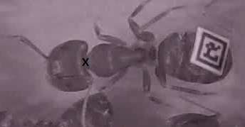

Ants as tools to understand society
Completed
Submissions
Participants
Views
Overview
Ant societies have long fascinated mankind by their resemblance to human societies and elaborate collective behaviour. Ants cultivate and farm fungus in their nests, herd aphids as cattle and wage war with each other.
In contrast to human societies, ants present an ideal study system to study how collective patterns emerge through self-organization and how societies respond to perturbations in their environment. We can easily manipulate crowding, resource availability and parasite pressure, thereby allowing us to study questions that would be impossible to answer in humans. One of the most interesting collective dynamics in a colony is the trade-off between fast transmission of food and how ants avoid the outbreak of diseases.
To better understand transmission dynamics and the underlying socio-ecological drivers, we have to analyze ant behaviour across time and space. The goal of this challenge is to generate algorithms that can:
- identify and track individual ants over time
- recognize when ants engage in food transfer
In the first part of this challenge, we will focus on the task of identification and tracking of individual ants over time. The training data provides the coordinates of all the ants for a subset of the time frames, and the goal of the challenge is to predict the coordinates of all the ants for the rest of the time frames.
(Image 1)
To identify individuals in the colony, we have attached a unique barcode (as described in http://journals.plos.org/plosone/article?id=10.1371/journal.pone.0136487 Crall JD, Gravish N, Mountcastle AM, Combes SA (2015) BEEtag: A Low-Cost, Image-Based Tracking System for the Study of Animal Behavior and Locomotion. PLoS ONE 10(9): e0136487. doi:10.1371/journal.pone.0136487 ) to the gaster of each worker (see image 1).
The only individual that was not marked was the queen, since her distinct appearance (larger body size) makes her very easy to identify, and moreover, we did not want to stress or injure her. Students have manually tracked several hours of ant movement inside a colony allowing us to determine the location of each worker for each second of video footage.
To ensure that the student’s tracking data is as exact and repeatable as possible, we asked the students to track the neck area of each ant (see image 2), because it is easily recognisable and relatively small leading to less variation among the students’ tracking data. In particular, each student tracked a focal ant by clicking on its neck area in each screenshot. To speed up this process, we used a customised Python code to record the x- and y-coordinates that were generated by the students’ clicking automatically. Thus we were able to obtain x and y coordinates (unit is pixels) for the location of all individuals at each second of the observation period. In instances when the ant neck was not visible, e.g., when an ant was underneath another ant, we estimated the neck position based on the last known location and the other visible body parts of this ant. If an ant left the nest, its coordinates were set to x = 0, y = 0.
 (Image 2)
Challenge Logo Source : https://www.flickr.com/photos/98180998@N04/9187248340/
The training data provides the coordinates of all the ants for a subset of the time frames, and the goal of the challenge is to predict the coordinates of all the ants for the rest of the time frames.
Evaluation
The overall error (or Loss) functions are defined as :
- $i$ refers to the ant-id
- $t$ refers to the frame-id
- $I$ refers to the highest ant-id we have in the test set
- $\tau$ refers to the lowest time-frame-id we have in the test set
- $T$ refers to the highest time-frame-id we have in the test set
- $X_{it}$ refers to the actual x-coordinate of the neck of the i-th ant at time-frame t
- $Y_{it}$ refers to the actual y-coordinate of the nect of the j-th ant at the timeframe t
- $x_{it}$ refers to the predicted x-coordinate of the neck of the i-th ant at time-frame t
- $y_{it}$ refers to the predicted y-coordinate of the nect of the j-th ant at the timeframe t
- $ɣ$ refers to the mean-squared error threshold required for valid predictions, its value is 100
- $\beta$ refers to the boolean value representing if the ant with ant-id $i$ is inside the frame with frame-id $t$ which uses the integral stand-in of 0 or 1 depending on when the variable is False or True.
The goal of the challenge is to minimise this error function/loss $L_1$ (which approximates the overall accuracy), and if multiple participants have the same $L_1$ score, then they will be evaluated and ranked based on $L_2$ (which is the mean squared error).
All submissions will be evaluated on the test dataset in the docker containers referenced in the Resources section. The code archive will be uncompressed into the /ants path, and every code archive is expected to contain a main.sh script which takes path to a folder containing frame images that will be tested, as its first parameter. So to test your code submission, we will finally execute :
/ants/main.sh pathToFolderContainingTestFrameImages
This is expected to output a CSV file containing the name of the file, and the associated probabilities for all the classes at the location :
/ants/predictions.csv
Rules
Participants submit a prediction.csv file in the format of the sample_prediction.csv file, described in the Resources section.
Participants may also submit scripts and any models as a .tar archive.
Participants must use one of the frameworks described in the Resources section, and the submitted script / model archive must be runable to produce the submitted prediction.csv file.
Participants are allowed a maximum of five submissions every 24 hours.
All images are released under the Creative Commons Attribution-ShareAlike 3.0 Unported (CC BY-SA 3.0) license, with the clarification that algorithms trained on the data fall under the same license.
Submitted code will be released publicly after the end of the challenge, under the Creative Commons Attribution-ShareAlike 3.0 Unported license. Winners must submit their model and scripts to be evaluated before claiming prizes.
crowdAI reserves the right to modify challenge rules as required.
Prizes
Applied Machine Learning Days at EPFL
The author of the most highly ranked submission will be invited to the Applied Machine Learning Days symposium at EPFL in Switzerland on January 30/31, 2017. This educational award is granted to the participant with the either the most insightful submission posts, or the best tutorial. Expenses for travel and accommodation are covered by crowdAI.
The submission needs to have at least an L_1 score of 80% to be eligible for this prize.
Monetary Prize
There is also a monetary prize for the most highly ranked submission, which is determined as follows :
$500 if the L_1 score of the best submission reaches >= 80%, but less than 85%
$1000 if the L_1 score of the best submission reaches >= 85%, but less than 90%
$2000 if the L_1 score of the best submission reaches >= 90%, but less than 95%
$5000 if the L_1 score of the best submission reaches >= 95%
Resources
The challenge dataset contains 6 files, including:
- frames.tar.gz.part-1
- frames.tar.gz.part-2
- frames.tar.gz.part-3
Which can be concatenated into a single file using :
cat frames.tar.gz.part-1 frames.tar.gz.part-2 frames.tar.gz.part-3 > frames.tar.gz
frames.tar.gz : a tarball of a folder which has separate images for all frames, with the name convention “frame-id”.jpeg (Note: the frame-id is an integer)
-
train.csv: A CSV file holding the training dataset with the following columns :
- ant_id : Holds the ant-id (as can be read from the barcode on the ant)
- frame_id : The frame_id associated with the particular data point
- x-coord : the X-Coordinate of the Neck of the Ant (or 0, if the Ant is not in the frame)
- y-coord: the Y-Coordinate of the Neck of the Ant (or 0, if the Ant is not in the frame)
- is-in-frame? : holds 1 or 0 depending on if the Ant if present in the frame or not.
-
test.csv: A CSV file holding the testing dataset with the following columns:
- ant_id: Holds the ant-id (as can be read from the barcode on the ant)
- frame_id: The frame_id associated with the particular data point
- sample_prediction.csv: A sample prediction file in the format that we expect the participants to submit their results. The columns are the same as the train.csv file.
Coding Environments
The code must be runnable in one of these Docker containers:
Caffe : https://hub.docker.com/r/tleyden5iwx/caffe-gpu-master/
Tensorflow : https://hub.docker.com/r/tensorflow/tensorflow/
Torch7 : https://hub.docker.com/r/kaixhin/cuda-torch/
Scikit-Learn :(Python-2): https://github.com/dataquestio/ds-containers/tree/master/python2
Scikit-Learn : (Python-3): https://github.com/dataquestio/ds-containers/tree/master/python3
Octave : https://hub.docker.com/r/schickling/octave/
Keras : https://hub.docker.com/r/patdiscvrd/keras/~/dockerfile/
If you wish to use another coding environment please contact us.